HTML & CSS
Creation of both functional and creative websites using HTML, CSS and basic JS.
UX/UI design using wireframes, Figma and Axure RP.
Click each image to visit!


The Witch's Garden focuses on using code to create objects in 3D space. Using a consistent colour palette and hand-drawn, textured aesthetics, this virtual diorama demonstrates the use of HTML, CSS and JS to make an interactive experience for the user.
A Future Record is an experimental website to catalogue wearable tech and represent digital identity using digital clothing. This site aims to use bright colours and distinctive visuals such as scrolling text, inspired by early 2000s websites.
The Museum of Alternative Facts (MoAF) is a hypothetical museum site, and focuses heavily on Javascript functionality and interesting features within each section. Using a restricted palette and photography-heavy graphics, I aim to demonstrate useful components.


Digital Publishing is a github hosted collection of pages, Bring Your Own Beamer meant to represent changing posters for the BYOB event. Using randomisation and JS, these posters focus on exploring unconventional graphics and text to convey event information.
A Figma created UX design for a hypothetical Bubble Tea Festival, made in consideration for both desktop and mobile formats. Created with a clean format and rounded, gradient styled graphics in mind, and features pages for events. (Please note that this site was designed with a smaller screen resolution in mind.)
A simple event directory made for the Museum of East Asian Mythology (MoEAM) based on Design Systems and Brand Guidelines created for the museum. One of which can be found here:
Brand Guidelines
 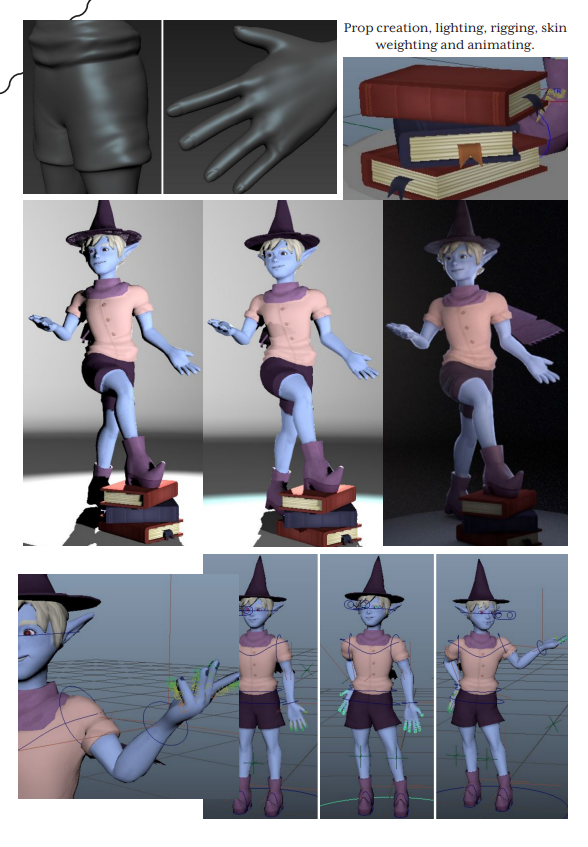
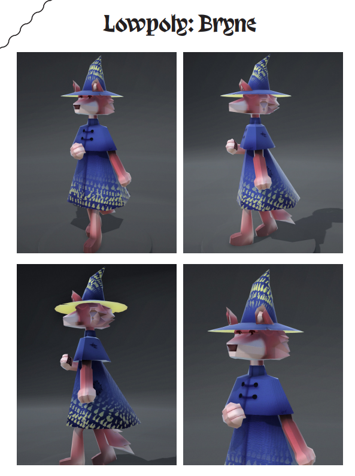
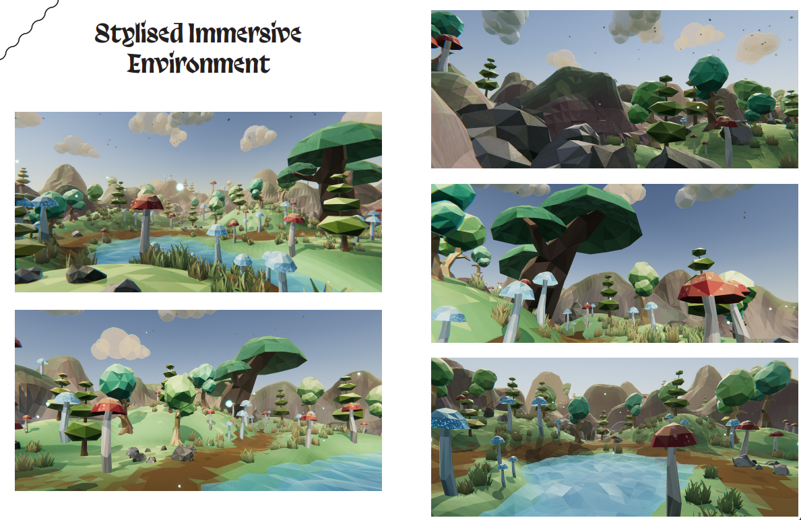
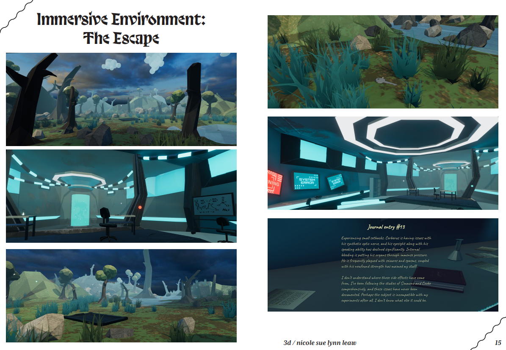
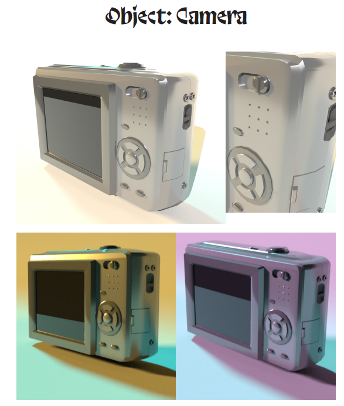
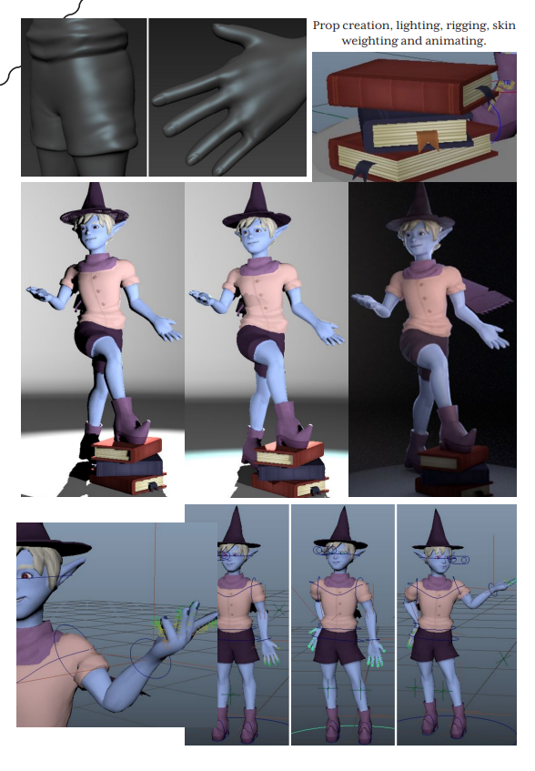
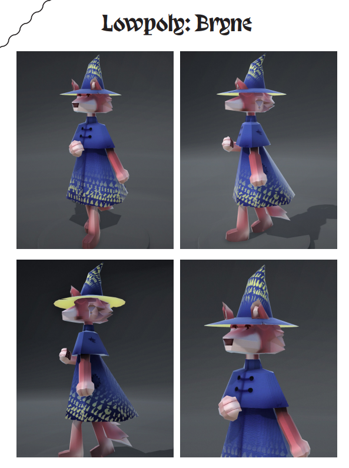
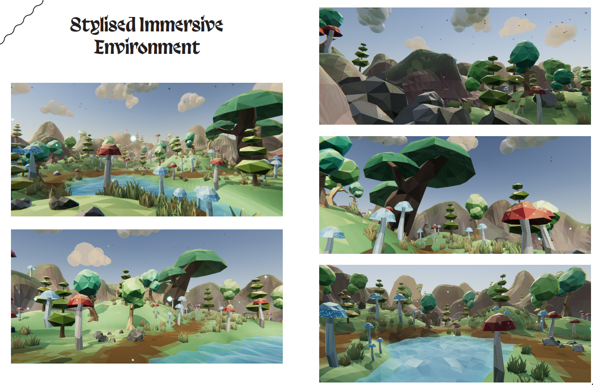
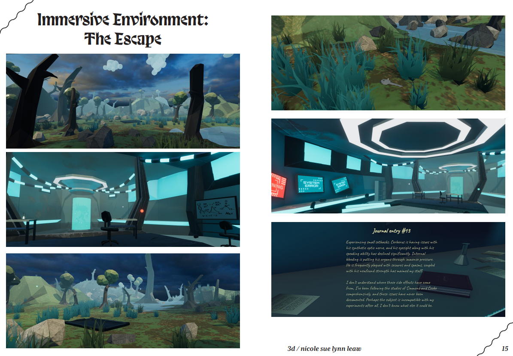
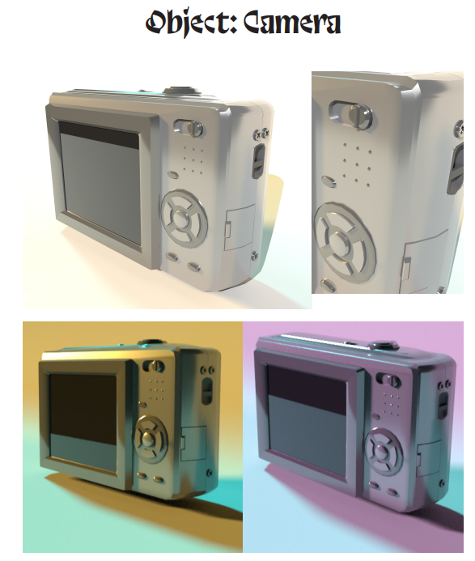


 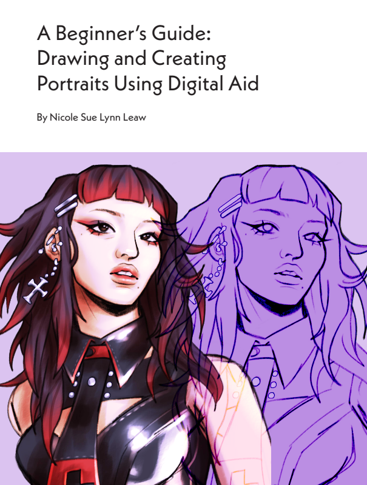
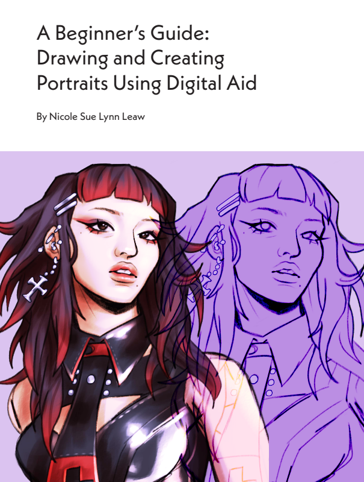


 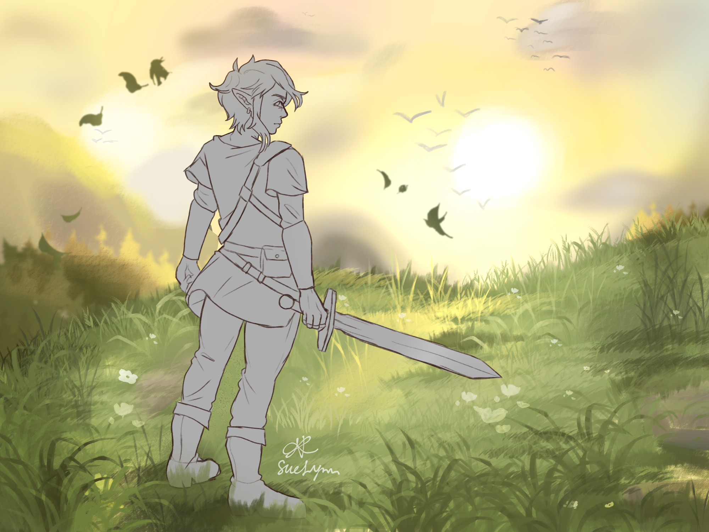
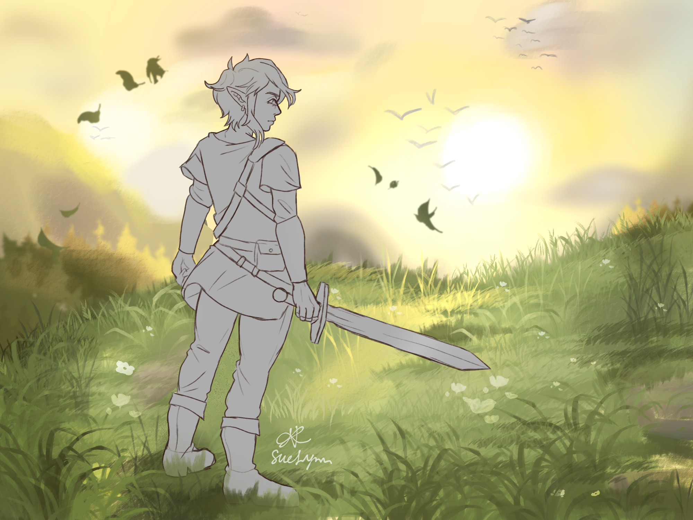


 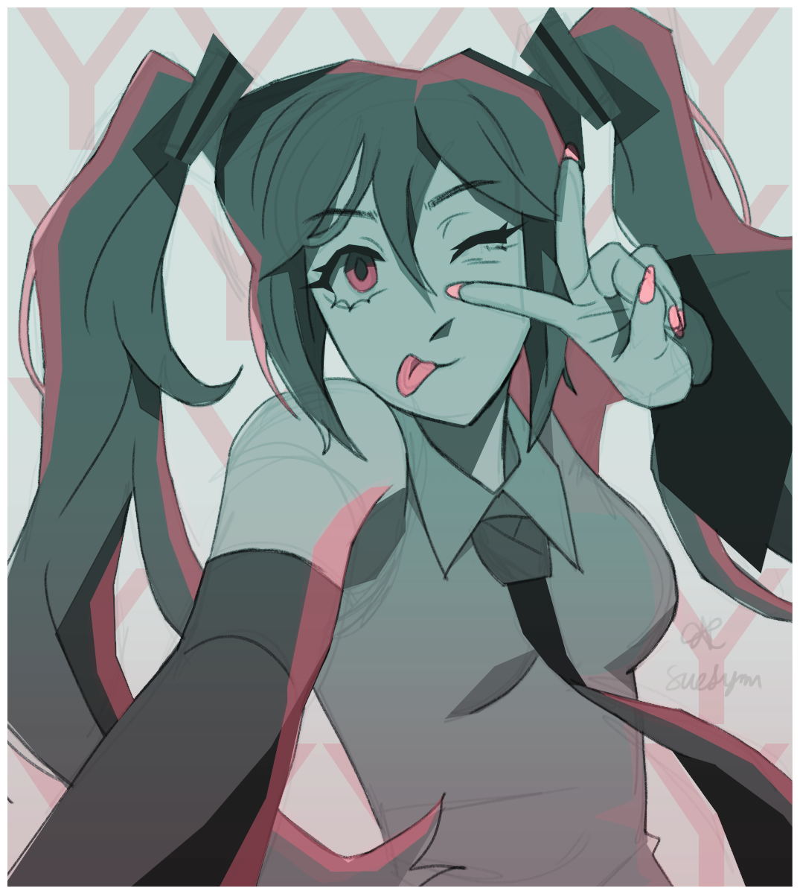
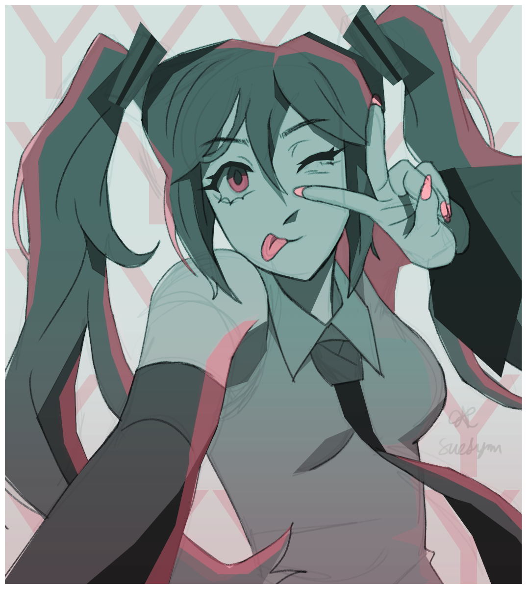